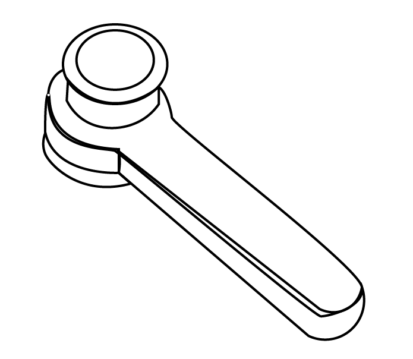
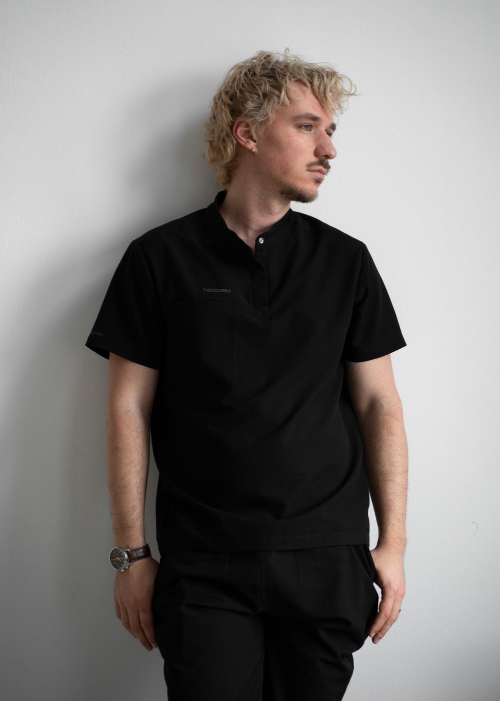
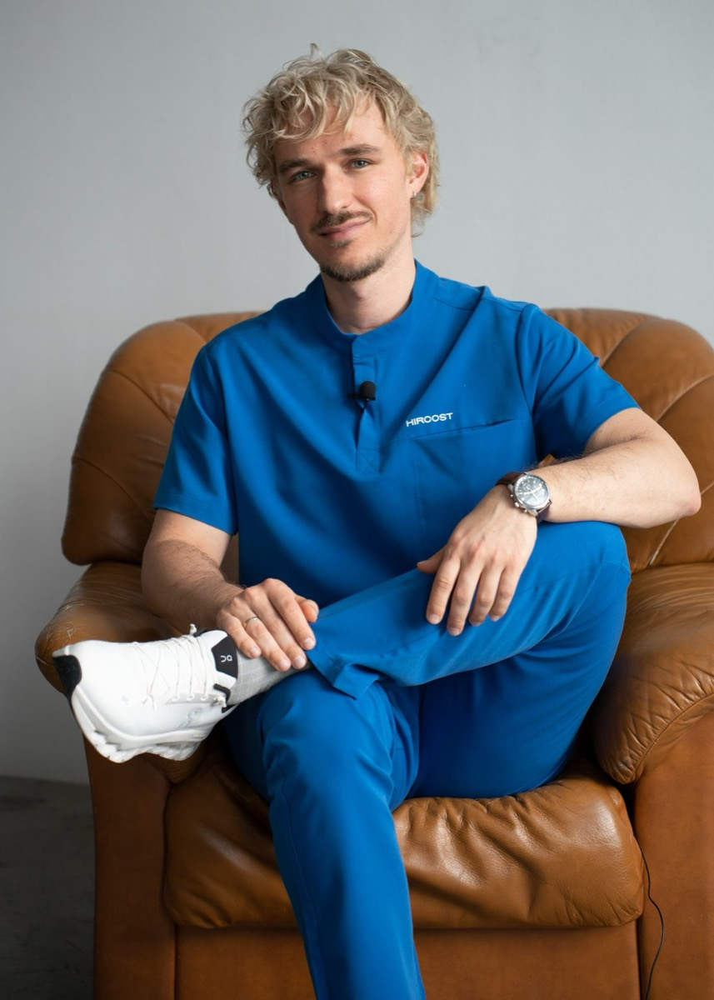

Диагностика и лечение заболеваний кожи по стандартам доказательной медицины
Я — квалифицированный врач-дерматовенеролог. В работе опираюсь на современные научные источники, постоянно повышаю квалификацию и изучаю новое в специальности.
Своей основной задачей считаю не просто поставить правильный диагноз, а сделать всё возможное, чтобы доступно и понятно объяснить пациенту, как максимально быстро достичь выздоровления. Веду как взрослых, так и маленьких пациентов — и стараюсь создать на приёме комфортную, спокойную атмосферу, в которой и ребёнку, и родителям всё понятно.
Работаю по принципам доказательной медицины. Если вам нужна консультация или лечение в области дерматовенерологии — буду рад помочь.

клинические случаи
слева — до лечения, справа — после
Диагностика и лечение кожных заболеваний, малые дерматохирургические манипуляции и диагностика новообразований кожи.
Веду приём в нескольких клиниках города. Запись и расписание уточняйте по телефону клиники или в личных сообщениях.
Опишите проблему в сообщении — отвечу и подскажу, как действовать дальше. Можно прикрепить фото.
Записаться онлайн